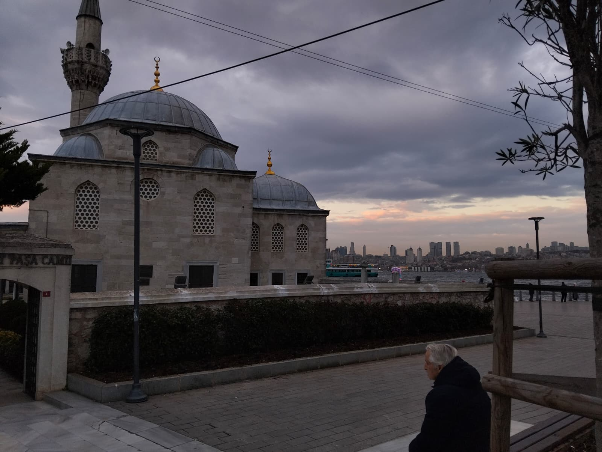
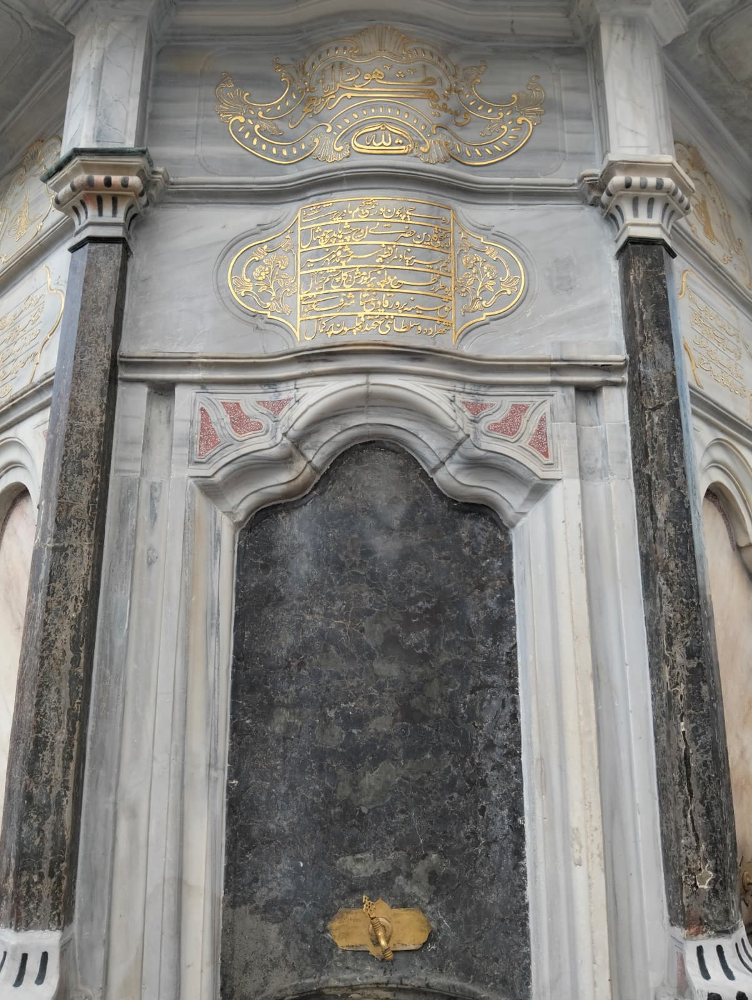
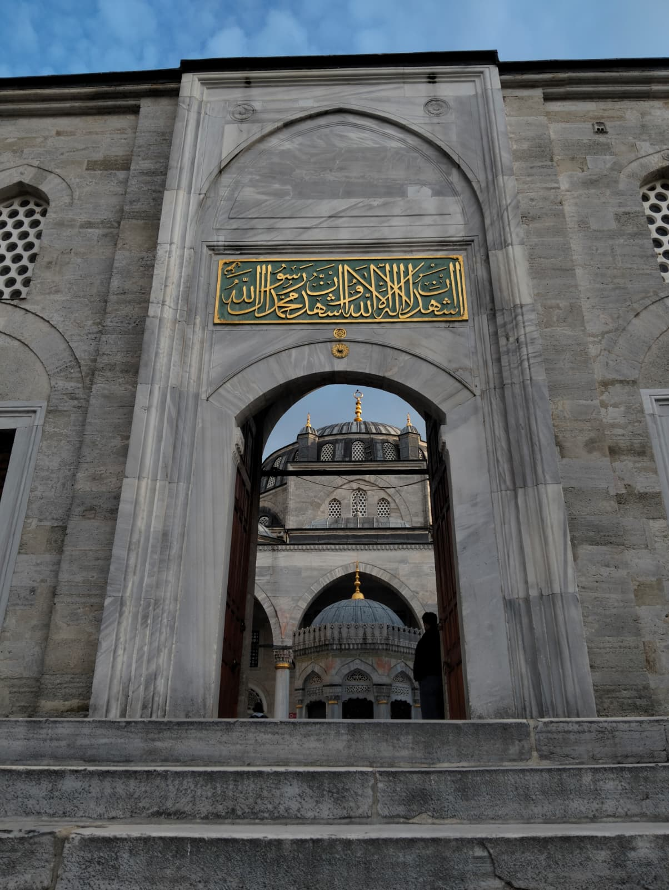
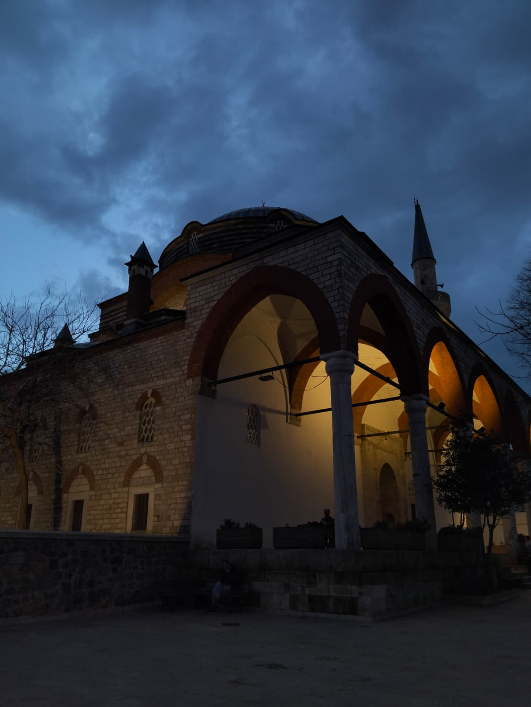
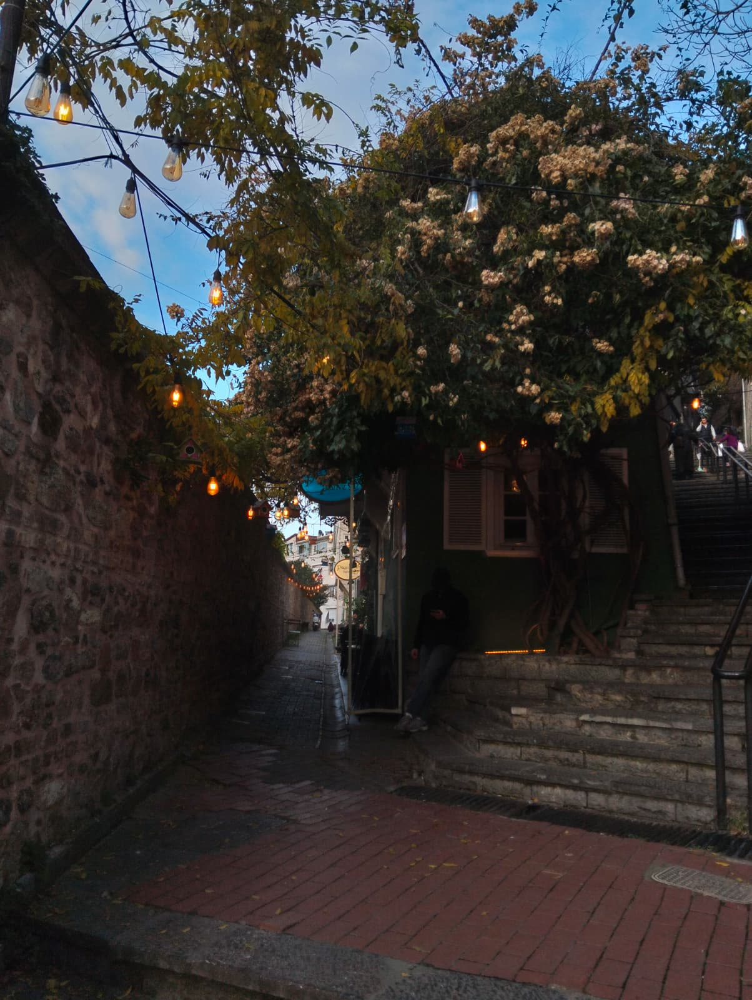
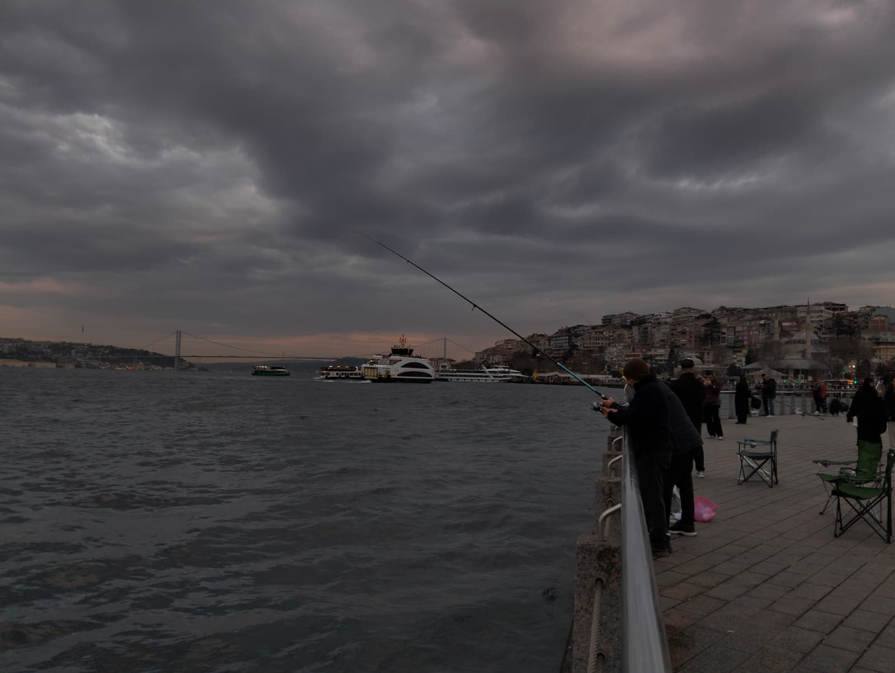
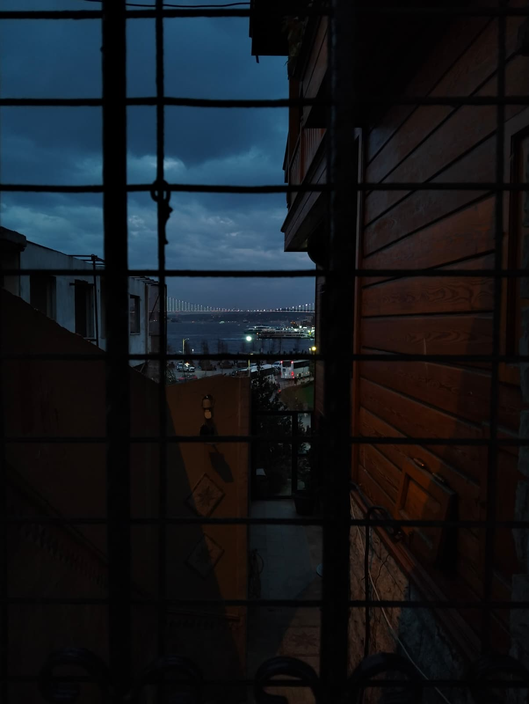
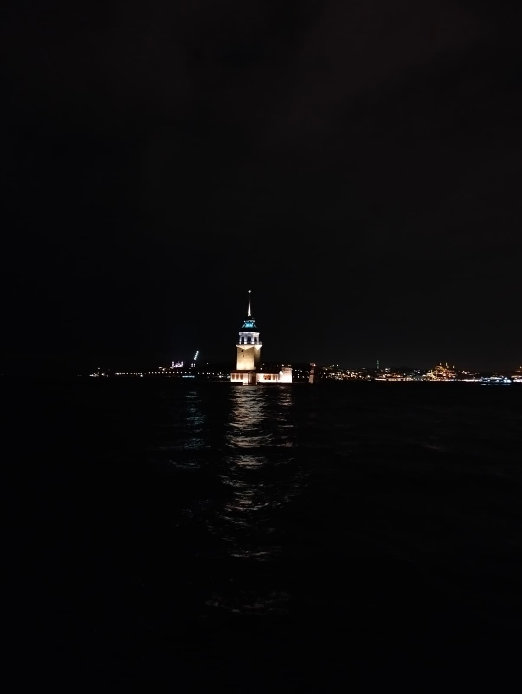
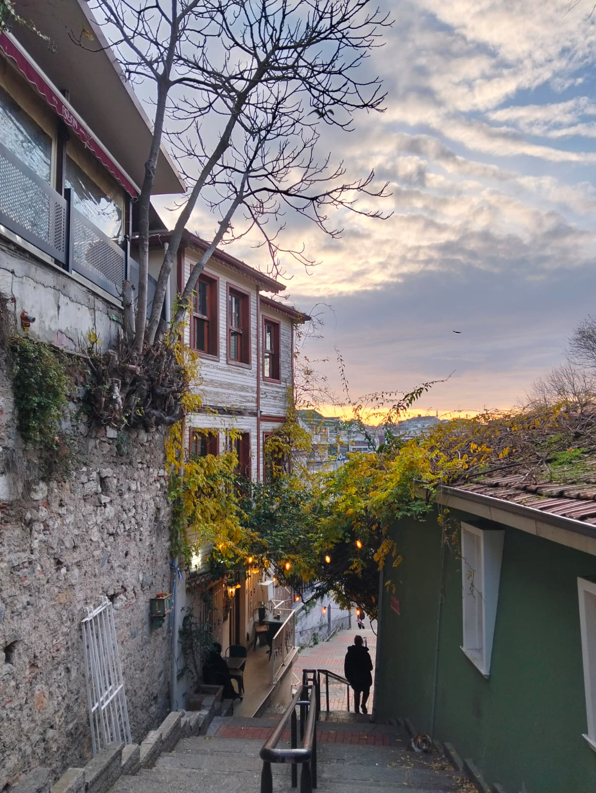

Üsküdar Fotoğraf Galerisi
Tarihi doku, sahil şeridi ve Kız Kulesi manzaraları
Üsküdar Fotoğraf Galerisi
Üsküdar'ın tarihi dokusunu, Boğaz manzaralarını ve eşsiz atmosferini yansıtan 20 fotoğraf. Mihrimah Sultan Camii'nin zarafeti, Çamlıca Tepesi'nin panoramik görünümü ve Salacak Sahili'nin huzur veren manzaraları objektifimden.












Koleksiyon Hakkında
Bu galeride Üsküdar'ın tarihi dokusunu, sahil şeridini ve Kız Kulesi'nin eşsiz manzaralarını bulabilirsiniz. Her fotoğraf, semtin ruhunu ve atmosferini yansıtmayı amaçlamaktadır.
Toplam Fotoğraf: 20 adet
Çekim Tarihi: Ocak 2026